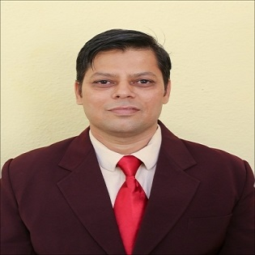

Designation : Assistant Professor
Department: ECE
Date of joning : 16/08/2007
Qualifications :
UG:B.E.(First Class)
PG:M.E.(Distinction)
Ph.D:pursuing
Total Experience :
Teaching : 18 Years
Industry : 3 years
Dr. Nitin Ishwarlal Bhopale is an esteemed academic faculty member and researcher serving at Sanjivani College of Engineering, Kopargaon, within technical and engineering departments. Bringing a robust academic background complemented by advanced doctoral qualifications, he plays a pivotal role in shaping the educational environment and technical capabilities of undergraduate and postgraduate students. His responsibilities encompass delivering core engineering lectures, conducting rigorous classroom instruction, and mentoring aspiring engineers through complex technical projects, research initiatives, and academic milestones. Beyond his regular instructional duties, he actively contributes to departmental activities, curriculum development, and collaborative institutional efforts designed to foster an innovative, practice-oriented learning culture that meets modern industry standards. Furthermore, Dr. Bhopale engages in scholarly research and professional pursuits aimed at advancing technical knowledge, fostering analytical problem-solving skills, and preparing students comprehensively for successful careers and evolving technological landscapes.